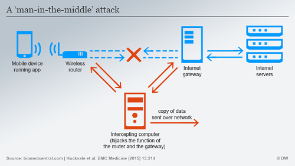
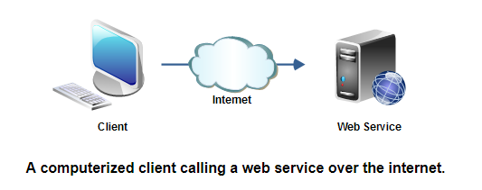
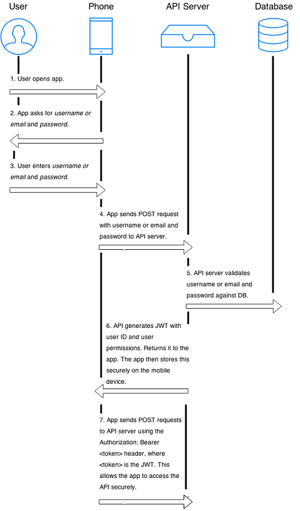

Identificirajuća veza prema web servisu
Temu rezervirali:
- Iva Slamić
- Mihovil Maričić
Sadržaj |
Uvod
Razvoj mobilnih aplikacija danas je uvelike raširen, te je najbitnije zadovoljiti korisnikove potrebe i želje. S druge strane, može biti jako zahtjevan kad je u pitanju sigurnost aplikacije. Mnogi pohranjuju svoje podatke u iste, te ima onih koji to žele iskoristiti i nekako doći do tih podataka. Ako radite na nekoj svojoj mobilnoj aplikaciji, koja zahtjeva autentifikacijju korisnika i dohvaćanje podataka sa servera, moguće je da izlažete određene funkcije vašeg poslužitelja preko web servisa kojima aplikacija može pristupiti preko weba. Tako dolazimo do pitanja kako osigurati web servise, kako autentificirati korisnika i slično. Iako poduzmete sve kako bi osigurali da se napad ne dogodi nikada ne možete biti 100% sigurni. Mobilna sigurnost je veliki problem najvećeg prioriteta danas za sve programere, ali je zato i osnovni dio kvalitete programskog proizvoda.
Tako ćemo u teorijskom dijelu govoriti općenito o napadima na mobilne aplikacije te spomenuti i opisati pojmove poput API key, Web Servis (RESTful i SOAP), reverse engineering i obfuskacija. Kod API ključa će biti spomenuti pojam "HTTP Basic Authentication" te zašto takvu autentifikaciju nije dobro koristiti. S druge strane navesti ćemo primjer korištenja OAuth ili "otvorene" autorizacije koja se preporuča u korištenju izrade sigurne aplikacije. Na kraju ćemo dati i sam opis nađeg programskog rješenja. Kod programskog dijela će se kreirati identificirajuća veze prema RESTful servisu od strane Android aplikacije na način da će se u runtime-u aplikacije generirati neki token. Isto tako, kreirati će se Web servis koji će provjeravati zahtjev i vraćati rezultate ako je zahtjev poslan od strane aplikacije te će biti generirani API i access token (koji traje jednu sesiju) za svakog klijenta kako bi se isti mogao posebno autentificirati.
(Ne)Sigurnost mobilnih aplikacija
Iz dana u dan raste broj aplikacija koje ljudi koriste u različite svrhe, pa tako većina njih drži dosta svojih privatnih informacija na njima. S obzirom da neki ljudi vide kako mogu imati neke koristi ako dođu do tih informacija pokušavaju sve kako bi neovlašteno došli do njih. Sve više i više se povećava broj napada dok većina ljudi nekada nije niti svjesna da su pogođeni time. Stoga je važno raditi na sigurnosti tih aplikacija.
Napadi
Pitanje sigurnosti mobilnih aplikacija može biti u tome kako se pohranjuju podaci korisnika. Naime programer koji nema dovoljno iskustva će vjerojatno pohranjivati podatke u nekakvu običnu tekst datoteku koja je lako čitljiva, a na taj se način lako može doći do podataka. Zbog toga je te podatke potrebno kriptirati prilikom spremanja na nivou samog uređaja. Kako je na početku spomenuto, ljudi koji vide nekakvu korist u informacijama od drugih će svakako pokušati doći do njih, a čest način je neautorizirani pristup. Isto kao što smo, barem većina, naučili da nije dobro otvarati čudne email-ove, također treba biti i oprezan kada neka aplikacija pokušava tražiti pristup našim podacima kojima uopće nema razloga pristupiti.[8]
Nadalje, kako danas svaka osoba koristi mobitel u skoro svakom aspektu života tako i zaposlenici nekog poduzeća koriste mobitele kako u privatne tako i u poslovne svrhe. Postoji mnogo špijunskih programa koji mogu biti instalirani na mobilne uređaje zaposlenika, te se na taj način mogu prikupljati podaci tvrtke u kojoj isti rade. Zatim, u novije vrijeme, došlo je do izrade tzv. mobilnih botova koji povezuju više uređaja u nekakvu mrežu bez znanja vlasnika
uređaja, a koji su tako kontrolirani od strane hakera. Također je bitno i provjeravati jesu li aplikacije koje imamo na mobitelima još uvijek aktivne jer se može dogoditi da su maknute iz Google ili Apple store-a iz različitih razloga bio to neki virus, kršenje autorskih prava ili možda iz razloga da je aplikacija prosljeđivala podatke nekoj trećoj strani.
Neki općeniti napadi na mobilne aplikacije koji postoje su:
- Mobile phishing
- Mobile pharming
- Mobile malware
- Mobile reversing and tampering
Man in the middle attack
"Man in the middle attack" (MiTM) je popularna metoda gdje napadač pokušava presresti komunikaciju između neka dva sustava, tj. između pošiljatelja i primatelja informacije. Napadač tako može presresti, slati i primati podatke koji su poslani za skroz drugu osobu, ali i ne moraju biti poslani. Naravno, i mobilni uređaji su isto izloženi takvim napadima. Znamo da podaci koji se šalju s neke mobilne aplikacije prema serveru idu preko WiFi-a ili mobilnog interneta do rutera operatera ili bazne stanice, te se usmjeravaju s rutera na ruter. Na tom putu oni se automatski pregledavaju i svaki taj skok je pod nečijom administracijom, a taj netko može sve to prisluškivati. Na taj način, napadač može preusmjeriti te podatke prema sebi i onda dalje odlučuje što će raditi s njima. Kako bi se uopće izbjegao spomenuti napad bitno je znati kako mobilna aplikacija obavlja autentifikaciju. Primjerice, nekakva potvrda koju aplikacija šalje prema poslužitelju kako bi se osiguralo da isti komunicira s aplikacijom s kojom bi i trebao.[9]

Slika 1. Man in the middle attack [1]
{kind=link}
Reverse engeenering
Reverse engeenering je dešifriranje uređaja, aplikacije ili softvera kako bi se otkrilo na koji način isti radi da bi se ukrala ideja i napravilo nešto bolje ili čisto iz razloga da se napravi isto. Ta metoda se koristi u različite svrhe. Kada je u pitanju Android OS, metoda predstavlja načine uzmianja izvornog koda i resursa iz APK datoteke. Datoteka može biti preuzeta s mobilnog uređaja korištenjem Android Debug Bridge-a (ADB) ili skidanjem izravno s Google Play dućana. Osoba koja planira napraviti reverzni inženjering mora znati neke informacije o vašoj aplikaciji poput toga koji je glavni API URL odnosno vašu domenu. Zatim je potrebno znati na koji način se izvodi autentifikacija i je li potrebno napraviti korisnički račun kako bi se aplikacija koristila. Na kraju, također je bitno znati i koji pozivi prema servisu postoje i koje parametre primaju. Jedan od načina zaštite od reverznog inženjeringa je i obfuskacija.[13]
Obfuskacija
Kako se reverznim inženjeringom može otkriti izvorni kod aplikacije poželjno je koristiti obfuskaciju. Jednostavno rečeno obfuskacija se koristi kako bi se kod mogao što teže razumijeti s ciljem da se spriječi krađa koda i poveća sigurnost aplikacije na taj način. Na taj način kod postaje puno teži za čitanje te je i teže napraviti reversni inženjering. Obfuskacija može biti napravljena ručno, ali više je preferiran način korištenja nekih od alata za bfuskaciju.[14]
Web Servisi
Distribucija raznih vrsta podataka se danas vrši preko interneta putem Web Servisa te se tako informacije korisnicima pružaju na odgovarajući način. Kao što je opisano od strane W3C:
"A web service is a software system designed to support interoperable machine-to-machine interaction over a network." [1]
Možemo također reći da su oni nekakva kolekcija koja sadrži otvorene protokole i standarde korištene za razmjenu podataka između aplikacija ili sustava.

Slika 2. Web Services [2]
{kind=link}
Nadalje, za komunikaciju s Web Servisima koriste se najčešće XML i JSON za razmjenu poruka te oni na taj način nisu vezani za niti jedan operacijski sustav ili programski jezik. Većina Web Servisa koristi HTTP pa su tako u osnovi i dalje samo web aplikacije te su zbog toga ranjive i potrebno ih je dobro zaštiti. Ranjivosti su slične kao i kod web aplikacija kao npr. SQL injekcija, otkrivanje i propuštanje raznih informacija i slično. S druge strane, vezano uz našu temu, pitanje je kako osigurati neke krajnje točke Web Servisa i kako na siguran način autentificirati korisnike koji žele koristiti neku mobilnu aplikaciju. Naravno, treba se pobrinuti da se ne pohranjuju nikakve osjetljive informacije s kojima bi se neovlašteno moglo pristupiti podacima na serveru i tako ugroziti povjerljive podatke.
Web Servisi sadrže tri komponetne:
- SOAP - XML bazirani protokol za pristup Web Servisima kojeg W3C preporuča za korištenje u komunikaciji između aplikacija (zbog XML jezika neovisan, tj. može ga koristiti bilo koji programski jezik ili platforma)
- WSDL (Web Services Description Language) - xml dokument koji sadrži informacije o Web Servisu (method name, method parameter) i kako im pristupiti
- UDDI (Universal Description, Discovery and Integration) - XML bazirani framework koji se koristi za opisivanje, otkrivanje i integriranje Web Servisa
Isto tako postoje dvije vrste Web Servisa: “Big Web Services" i "RESTful Web Services". "Big Web Services" se temelje na XML porukama koje prate "Simple Object Access Protocol" (SOAP) - XML jezik koji definira arhitekturu poruke i format poruke. Dok, su "RESTful Web Services" često bolje integrirane s HTTP-om nego što su SOAP i ne zahtijevaju XML poruke ili WSDL usluge.[2]
SOAP Web Servisi
Kao što je već navedeno SOAP je protokol, tj. skraćenica od "Simple Object Access Protocol" koji definira neke svoje standarde čija se pravila moraju strogo slijediti. Jedini format koji SOAP protokol dopušta je XML, te koristi sučelja usluga kako bi prikazao poslovnu logiku. S obzirom da su SOAP poruke kompleksne koristi se Java API JAX-WS (Java API for XML Web Services) koji tu kompleksnost skriva od programera. Prednosti SOAP Web Servisa su te da definiraju svoju vlastitu sigurnost (WS Security je ekstenzija koja to omogućuje), te to što su neovisni i o programskom jeziku i o platformi, odnosno mogu biti napisani u bilo kojem programskom jeziku i izvršeni na bilo kojoj platformi. S druge strane, takvi Web Servisi imaju i svojih nedostataka. Koriste XML format koji mora biti parsiran da bi bio čitljiv i zbog definiranih standarda koji se strogo moraju slijediti su jako spori i troše više propusnosti i resursa. Također su ovisni o WSDL opisu servera jer nemaju nikakvih drugih mehanizama za otkrivanje usluga.[4]
RESTful Web Servisi
Više su preferirani nego SOAP Web Servisi. REST je kratica za "REpresentational State Transfer" što zapravo označava koncept koji se bazira na promijeni stanja klijenta gdje se sve akcije obavljaju u trenutku promijene tog stanja, s mogućnošću vraćanja na prethodna stanja. Za prikazivanje poslovne logike koristi se URI (Uniform Resource Identifiers) standard, primjer. http//https://www.nameofwebpage.com/program/method?Parameters=xx. Sigurnost poruka osigurava transportni protokol (HTTPS). Ovi Web Servisi imaju velik broj prednosti. Prvo je da su brzi za razliku od SOAP protokola jer nemaju nekih strogih specifikacija te tako troše manje propusnosti i resursa. Također su neovisni o programskom jeziku i platformi. Pozitivna strana je i ta što mogu koristiti, uz HTTP protokol na kojem su bazirani, i SOAP protokol, dok obrnuto nije moguće. REST podržava različite oblike podataka poput običnog teksta, HTML, XML, JSON i slično. Nadalje, Java API koji RESTful Web Servisi koriste se naziva JAX-RS (JAVA API for RESTful Web Services).[4]
Kod RESTful servisa je bitno napomenuti da koristi HTTP metode koje služe tome da se kreiraju, ažuriraju i brišu resursi, te za izvršavanje upita. Najčešće korištene HTTP metode su: POST, GET, PUT, PATCH i DELETE od kojih su nama za ovaj projekt bitne prve dvije.[12]
HTTP POST
- služi za stvaranje novih resursa
- ako je resurs kreiran vraća odgovor 201 (Created) koji također sadrži status zahtjeva novog resursa i njegovu lokaciju
- ako resurs nije identificiran s URI-em vraća odgovor 200 (OK) ili 204 (No Content)
Primjer
HTTP POST http://www.appdomain.com/users
HTTP POST http://www.appdomain.com/users/123/accounts
HTTP GET
- služe za prikaz određenog resursa
- ako je resurs pronađen na poslužitelju vraća odgovor 200 (OK) zajedno sa sadržajem u XML ili JSON formatu
- ako resurs nije pronađen na poslužitelju vraća odgovor 404 (NOT FOUND)
- ako GET zahtjev nije točno definiran vraća odgovor 400 (BAD REQUEST)
Primjer
HTTP GET http://www.appdomain.com/users
HTTP GET http://www.appdomain.com/users?size=20&page=5
HTTP GET http://www.appdomain.com/users/123
HTTP GET http://www.appdomain.com/users/123/address
Kao što smo naveli GET zahtjevi trebaju služiti samo tome da se dohvaćaju resursi, ali nikako za njihovo ažuriranje jer se tako narušava sigurnost aplikacije. Po tome su POST zahtjevi nešto sigurniji jer ne otkrivaju informacije putem URL-a, te ćemo ih koristiti i u našem programskom riješenju. Naravno, POST metode same po sebi nisu dovoljne za veliku sigurnost aplikacije.
API ključ
"Application programming interface key" (API key) je kod korišten u aplikacijama koje pozivaju API kako bi se identificirao pozvani program ili programer ili korisnik. API ključ je ujedno i jedinstveni identifikator i token za autentifikaciju jer sadrži skup prava pristupa prema API-u s kojim je povezan. Prema tome je svaki API ključ jedinstven za pojedinu aplikaciju što mu zapravo omogućava UUID (universally unique identifier) sistem.[7]
U ovom projektu ćemo se bazirati na ulogu koju API ključevi imaju kod mobilnih aplikacija. Aplikacije obično koriste API ključeve kako bi pružatelj usluga mogao filtrirati zahtjeve. Pravilnom upotrebnom oni igraju važnu ulogu u sigurnosti aplikacije, kao i njezinoj efikasnosti te praćenju upotrebe. Najosnovniji oblik API autentifikacije je poznat pod nazivom "HTTP Basic Authentication" koji zahtjeva samo korisničko ime i password. S obzirom kako radi vrlo je jednostavan za one koji pišu API-e i ljude koji ih koriste.
Kako funkcionira:[3]
- Programer dobije API ključ koji uglavnom izgleda ovako: 3bb743bbd45d4eb8ae31e16b9f83c9ba:ffb7d6369eb84580ad2e52ca3fc06c9d
- Programer mora biti odgovoran te ga pohraniti na siguran način, negdje gdje nitko ne može doći do njega
- Programer šalje API zahtjeve prema API usluzi stavljanjem tog istog API ključa u HTTP autorizacijski "header" zajedno s riječju Basic
On se zatim enkodira, a API server ga dekodira, te ako odgovara dospustit će da se zahtjev izvrši.
Tu nastaje problem ako se želi koristiti "HTTP Basic Authentication" kod mobilne aplikacije iz razloga što se API ključ mora spremiti u aplikaciju kako bi sve funkcioniralo. Zapravo je u većini slučajeva nepraktično jer nema sigurnog načina pohrane ključa, stoga takva autentifikacija nije najpogodnija u nepouzdanim okruženjima. Na primjer, ako napravite mobilnu aplikaciju s API ključem ugrađenim unutra drugi "pametni" korisnik bi mogao napraviti "reverse engineer" vaše aplikacije te tako izložiti ključ, doći do vašeg koda, točnije cijele konstrukcije programa, i zloupotrebiti aplikaciju. Stoga kako bi aplikacija bila sigurnija "hard-encoding" nije poželjan.[5]
Kako autentificirati korisnika mobilne aplikacije na siguran način?
Autentifikaciu preko API ključa svatko radi na svoj način, te je najčešći taj da se prenese preko URL-a, npr. http://example.com?apikey=mysecret_key. Iako takav način pruža osnovnu zaštitu u praksi je najgori način za prenošenje API ključa. Već smo spomenuli osnovnu autentifikaciju te rekli kako je kod mobilne aplikacije nije poželjno koristiti. Tako dolazimo do pojma otvorene autorizacije (eng. Open Authorization) ili OAuth koja ima dvije verzije: OAuth1 i OAuth2.
Prvenstveno, takva autorizacija isto zahtjeva nekakve korisničke podatke, ali u pozadini između aplikacije i servera se razmijenjuju informacije da bi se na kraju aplikaciji dodijelio važeći ključ.
Sada ćemo kroz primjer pokazati kako se odvija ta autorizacija. Za primjer ćemo uzeti prijavu korisnika u aplikaciju.
Nerijetko kada korisnik prvi put otvori aplikaciju prikaže mu se zaslon za prijavu (registraciju) gdje se od njega traži da unese podatke, odnosno mail ili
korisničko ime i lozinku. Kada unese tražene podatke aplikacija pošalje POST zahtjev pružatelju API usluge, naravno bitno je slati preko SSL sloja. Kada
poslužitelj dobije te podatke prvo ih ovjeri i potvrdi, a zatim stvori pristupni (access) token za korisnika koji ima neki rok trajanja. Taj isti token se spremi negdje na mobilnom uređaju i tretira se zapravo kao API ključ preko kojeg ćemo moći pristupati API usluzi. Naravno, nakon što istekne rok tokena ponovno se zatraži korisnika da unese svoje podatke kako bi i dalje mogao koristiti aplikaciju te mu se dodijeli novi, i tako u krug.[5]

Slika 3. Kako to radi? [5]
{kind=link}
Najbolji prakse za sigurno korištenje API ključeva
Kako je već navedeno jako je bitno, kada se koriste, držati API ključeve sigurnima jer jednom ako netko dođe do toga, može ugroziti vaš račun te tako može doći do neočekivanih troškova. Neke od najboljih praksi naveo je Google u svom "Help" odjeljku za rad s API-em i API ključevima:[11]
- API ključ se nemojte ugrađivati izravno u kod
- API ključ nemojte pohranjivati u datoteke izvornog koda
- Ograničite upurabu API ključeva na one IP adrese, URL-ove i mobilne aplikacije koje ih stvarno trebaju
- Obrišite one ključeve koji vam ne trebaju
- S vremena na vrijeme ih obnovite
- Pregledajte svoj kod prije nego ga javno objavite
Opis programskog rješenja
Cilj ovog projekta "Identificirajuća veza prema Web Servisu" bio je pokazati na programskom riješenju kako napraviti sigurnu aplikaciju. Za autentifikaciju korisnika smo uzeli registraciju i prijavu preko koje vrši prijavu sa svojim emailom i lozinkom. Kao i u svakoj aplikaciji tako i u našoj, kada se korisnik prvi put ide upisati izvrši se registracija, a sve dalje je prijava. Aplikaciju smo radili u programskom okruženju Android Studio, te smo koristili programski jezik Java. S druge strane, kao što smo već prethodno kroz teoriju spomenuli, koristili smo RESTful web servise.
Za rad s aplikacijom napravljene su četiri klase: LoginActivity, MainActivity, ServiceResponse, WebServiceCaller i dva interface-a: APIInterface i OnServiceFinished. LoginActivity klasa implementira zadnja dva spomenuta interface-a. Ona služi tome da se korisnik autentificira i da dobije svoj "access token". U APIInterface klasi se definira što će se sve slati servisu. Klase ServiceResponse i WebServiceCaller komuniciraju s web servisom. Zahtjevi se
naravno šalju POST metodom te je definiran i API ključ za autentifikaciju.
Za rad s web servisima napravljene su dvije skripte. Skripta pod nazivom baza.class.php služi za definiranje poslužitelja i baze te sadrži funkcije za spajanje na bazu i izvršavanje upita. Druga skripta, loginOrRegistrate.php, služi za pohranu novog korisnika ili autentifikaciju postojećeg. Tu su definirani upiti koji se izvršavaju nad bazom. Tako imamo SELECT za provjeru postojećeg korisnika, INSERT za stvaranje novog i UPDATE za stvaranje pristupnog tokena korisnika. Bitno je također napomenuti da, prije nego što se sve izvrši, postoji if uvjet koja zahtjeva POST metodu, da uređaj bude
Android, te odgovarajući API ključ. Nadalje, u kodu smo koristili i tzv. "prepare statements" koje služe tome da se preko njih izvršavaju isti ili slični upiti tako da se šalju neodređeni parametri što povećava sigurnost aplikacije. Jedan primjer toga je "INSERT INTO table VALUES (?, ?)".
Problem kod naše aplikacije je taj da se reverznim inženjeringom, opisanim prethodno, može doći do API ključa te bi sigurnost mogli povećati time da napravimo obfuskaciju koda.
Source code: https://github.com/mihmarici/sisProject
Reference
1. W3C, Web Services Glossary, 2004, https://www.w3.org/TR/2004/NOTE-ws-gloss-20040211/#webservice dostupno 10.01.2018.
2. Tutorials on point,What are Web Services?, 2017, https://www.tutorialspoint.com/webservices/what_are_web_services.htm dostupno 10.01.2018.
3. Oracle, The Java EE 6 Tutorial, 2013, https://docs.oracle.com/javaee/6/tutorial/doc/giqsx.html dostupno 10.01.2018.
4. Javatpoint, Web Services Tutorial, 2011-2017, https://www.javatpoint.com/web-services-tutorial dostupno 10.01.2018.
5. Randall Degges, The Ultimate Guide to Mobile API Security , 2015, https://stormpath.com/blog/the-ultimate-guide-to-mobile-api-security dostupno 10.01.2018.
6. Skip Hovsmith, Mobile API Security Techniques , 2017, https://hackernoon.com/mobile-api-security-techniques-682a5da4fe10 dostupno 10.01.2018.
7. Tomtom, WHAT IS AN API KEY?, 2016, https://uk.support.telematics.tomtom.com/app/answers/detail/a_id/6121/~/what-is-an-api-key%3F dostupno 10.01.2018.
8. Eric-Beehler, Top five mobile application vulnerabilities, 2012, http://searchmobilecomputing.techtarget.com/tip/Top-five-mobile-application-vulnerabilities dostupno 10.01.2018.
9. Veracode, Man-in-the-Middle (MITM) Attack, https://www.veracode.com/security/man-middle-attack dostupno 10.01.2018.
10. Gonzalo Vázquez, An Introduction to API’s, 2015, https://restful.io/an-introduction-to-api-s-cee90581ca1b dostupno 10.01.2018.
11. Google, Best practices for securely using API keys, https://support.google.com/cloud/answer/6310037?hl=en dostupno 10.01.2018.
12. REST API Tutorial, HTTP Methods, https://restfulapi.net/http-methods/ dostupno 14.01.2018.
13. SmartymPro, Mobile app security: How to avoid reverse engineering of an Android app, 2017, https://smartym.pro/blog/mobile-app-security-how-to-avoid-reverse-engineering-of-an-android-app/ dostupno 17.01.2018.
14. Stackexchange, Obfuscation and Mobile App, 2014, https://security.stackexchange.com/questions/57500/obfuscation-and-mobile-app dostupno 17.01.2018.
Slike
1. http://www.dw.com/en/uk-study-reveals-significant-privacy-and-data-risks-in-trusted-health-apps/a-18742210 dostupno 10.01.2018.
2. http://tutorials.jenkov.com/web-services/overview.html dostupno 10.01.2018.
3. https://stormpath.com/blog/the-ultimate-guide-to-mobile-api-security dostupno 10.01.2018.